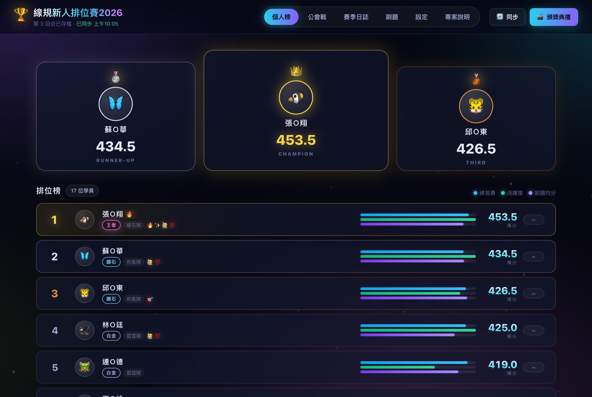
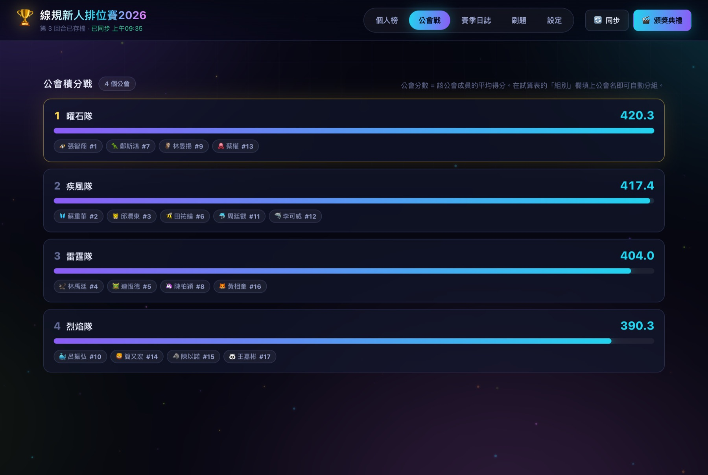
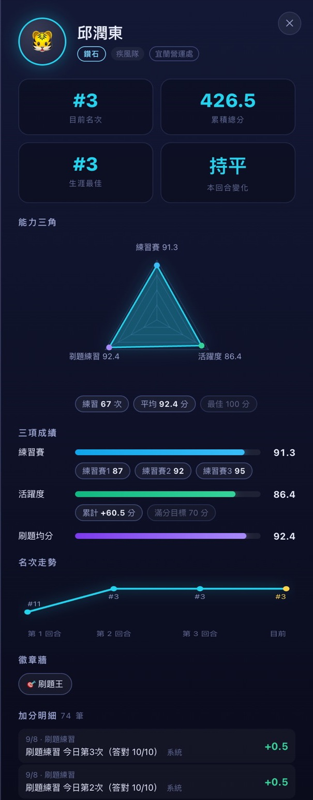
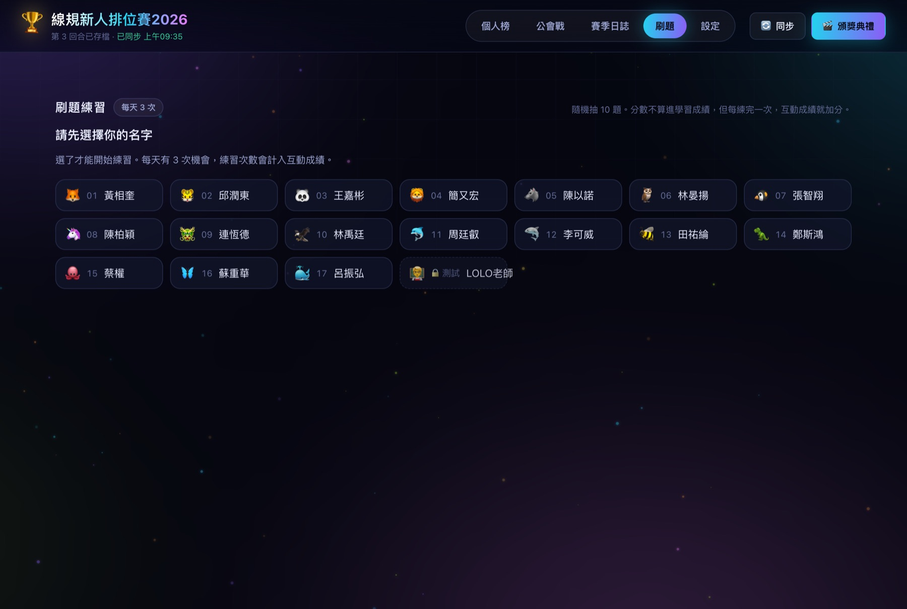
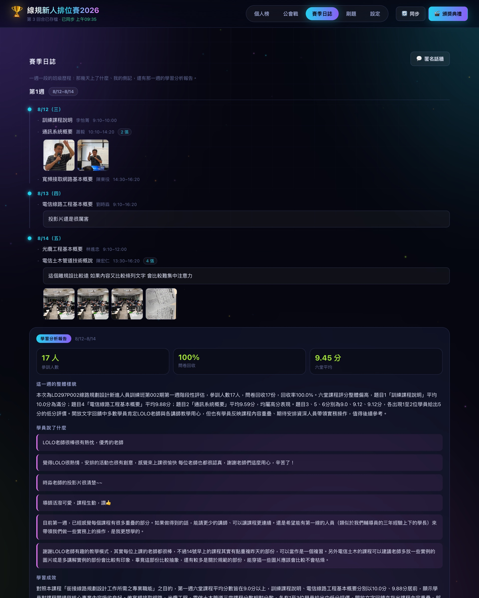
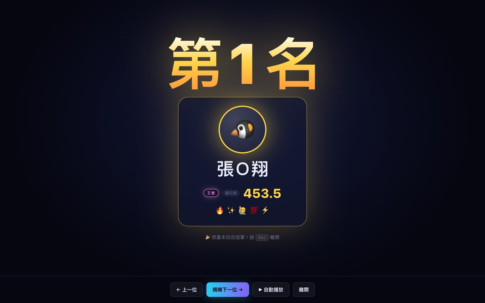
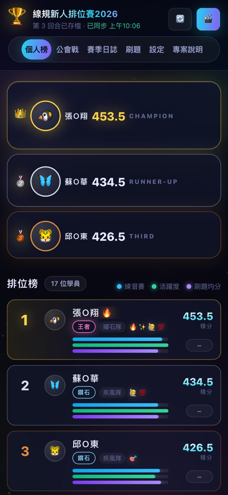
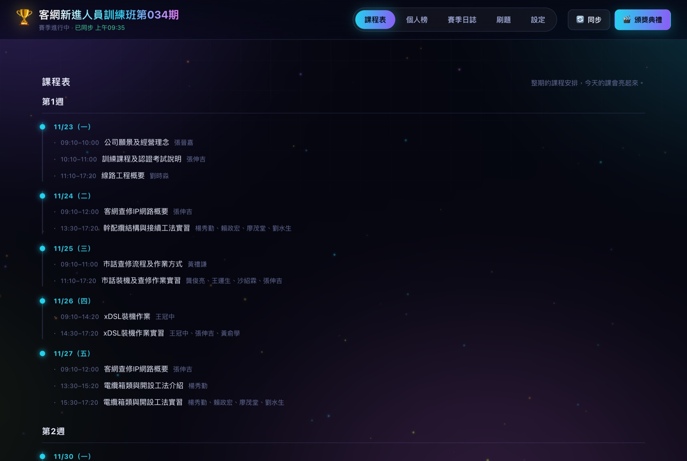
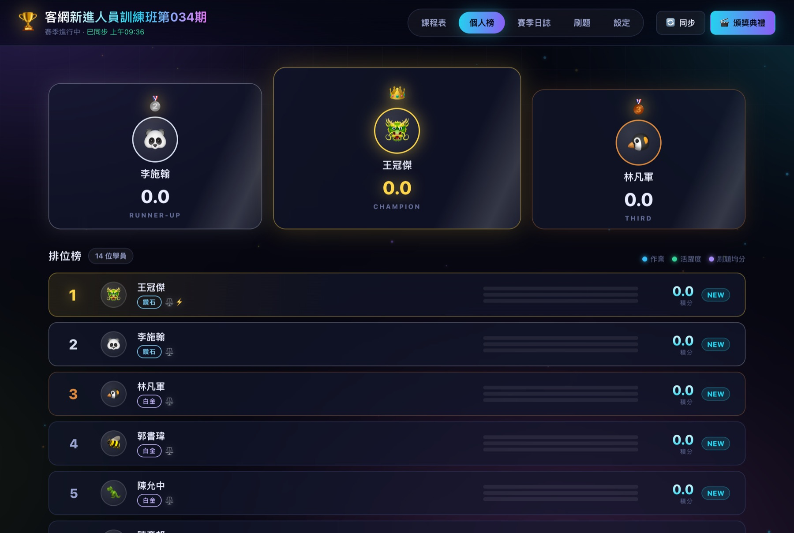

把訓練班的成績表變成一個學員會主動打開的排位網站：作業、課堂表現、刷題練習即時累積成排名，期末同一份資料直接算出學期成績。這份報告說明為什麼要做、做出什麼效果，以及已經複製到客網新進人員訓練班的經驗。
數據來源：班級成績試算表的「刷題紀錄」「表現紀錄」分頁，及三份學習回饋問卷，統計至 2026-11-18。
燙頭髮很無聊要幹嘛？剛剛邊洗頭的時候突然想到一個點，我可以做一個排行榜的網站，作為我新人班學生們的成績公告欄，這樣應該會蠻有樂趣。 2026-08-08，開訓前四天
念頭來得很隨性，但背後是新人班一直存在的幾個問題：
| 過去的狀況 | 排位賽的做法 |
|---|---|
| 成績到期末才公布，學員在過程中不知道自己的位置 | 每交一份作業、每拿一次加分，排行榜當場重排，學員隨時看得到 |
| 課堂上的主動表現很難被看見，也很難量化 | 講師在試算表記一筆加分，學員的「活躍度」就往上長，個人頁看得到是哪一堂、什麼原因 |
| 過去沒有提供題庫讓學員練習，要到考試才知道學得如何 | 網站內建刷題：隨機抽 10 題、當場解答並附講義出處，每次練習自動記錄並加分 |
| 期末要手動把作業、表現、考試按比重算成學期成績 | 同一份資料自動算出 0–100 學期成績，按一下複製，直接貼進學習系統 |
| 過去沒有每週學習分析報告；課堂照片只在導師寫報告時用到 | 「賽季日誌」把每天的課、講師、照片和每週學習分析報告串成一條時間軸，照片成為學員也看得到的班級紀錄 |
整個網站從發想、設計到上線，第一版全程用手機完成。它不需要伺服器，也沒有任何費用：網頁放在 GitHub Pages，資料放在 Google 試算表，導師只要會改試算表就能維運。

排行榜用的是累積總分：已評的作業、累計加分與考試直接相加。還沒評分的項目是「還沒加上去」而不是 0 分，所以分數只會往上爬，學員不會遇到「我沒退步，分數卻掉了」。



刷題分數不計入學期成績，但每練一次會在活躍度加 0.5 分。這是刻意的設計：鼓勵多練，而不是鼓勵考高分。



刷題是完全自願、不計成績的功能，但全班 17 人都用過，四週內累積 1,036 回合、作答 10,316 題。每人練習次數中位數是 69 回合，最少的也練了 14 回合。
17 位學員各自的前 5 回合與最後 5 回合平均，再取全班平均。全部回合中有 271 回合拿到滿分。
分數上升有一部分來自題目重複出現、學員記住了答案，不能全部解讀為能力提升；但它至少說明學員把題庫完整看過好幾輪，而且每次答錯都會看到講義出處。
「表現紀錄」共 1,131 筆，其中 95 筆是課堂加分，由導師與另外 15 位老師記錄；其餘 1,036 筆是刷題自動加分。講師記一筆加分，學員下課打開網站就看得到，課堂互動有了即時回饋。
三份學習回饋問卷（涵蓋 8/12–8/27 共 21 堂課）每份 17 人全數回收，共 357 個評分，總平均 9.43 分。學員回饋提到：
覺得 LOLO 很熱情，安排的活動也很有創意，感覺來上課很愉快。第 1 週學習回饋
問卷評的是整體課程，並非只針對排位賽網站；這裡列出作為班級氛圍的參考，不代表網站單獨的成效。
因為作業、課堂表現、刷題都在同一個地方，導師更容易看到單一分數看不出的差異。例如作業一（整理單位工作項目）與作業三（用 AI 輔助學習）的名次幾乎沒有關聯：作業一前段的學員有三位在作業三落到後段，作業一排第 14 的學員在作業三升到第 2。會條列整理工作，跟會用 AI 深入追問，是兩種不同的能力。這讓評分標準能依每份作業真正要考的能力分別設計。
線規班結訓後，2026-10-20 把整套網站複製給客網新進人員訓練班第 034 期（LT153P034），11/23 開訓。


| 項目 | 線規 002 期 | 客網 034 期 |
|---|---|---|
| 學員 | 17 人 | 14 人 |
| 課程 | 26 堂（8/12–9/8） | 54 堂（11/23–12/23） |
| 題庫 | 240 題、14 個科目 | 110 題、9 個科目（由考題 Word 檔轉入，刪除 1 題重複） |
| 作業 | 3 份 | 2 份 |
| 活躍度滿分目標 | 70 分 | 50 分（課期與人數不同，另行調整） |
| 第二個分頁 | 公會戰 | 改為「課程表」，整期列出、當天的課亮起來 |
網站程式主體可以沿用，只做小幅調整（班名、配分、分頁內容、各班設定互不干擾）。主要工作是準備新班的試算表（複製舊表、清空分數，貼上名單、課程表和題庫），以及重新部署刷題後端。各班的網站獨立運作，舊班網站完整保留。
複製時要注意的事
網站是公開網頁，任何拿到連結的人都看得到排名，作業內容與個資一律不放上去。
刷題後端在全班同時交卷時會排隊，十幾人同一刻交卷可能要等上數十秒，少數人會失敗需要重按（系統會自動重試，也不會重複計分）；適合課後自主練習，不適合拿來當全班同時作答的正式考試。
沿用舊班的刷題網址會把新班的紀錄寫進舊班的試算表，每一班都要重新部署。